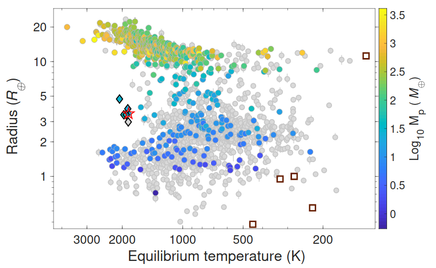
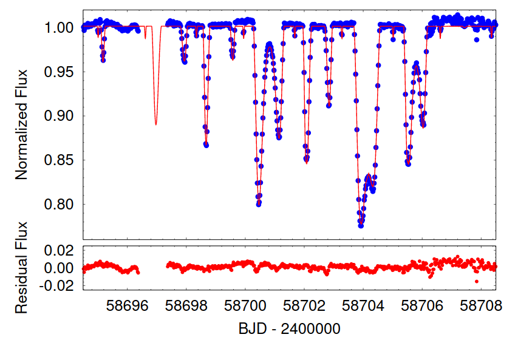
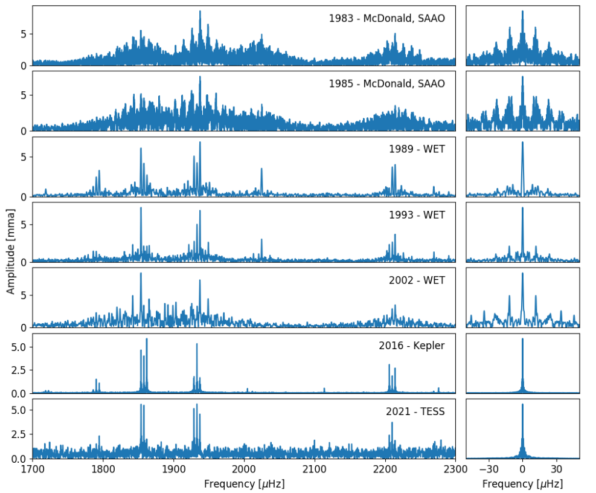

Welcome TESS followers to our latest news bulletin! Before we get started with the papers, we would first like to advertise the Atmospheric Characterization Working Group (ACWG).
The ACWG works to ensure the successful legacy of the TESS mission, specifically as it relates to the atmospheric characterization of its discovered exoplanets. The group currently pursues several tasks, including identifying the most promising TESS-discovered exoplanets for atmospheric characterization, coordinating with other TESS working groups to enable atmospheric characterization efforts, providing a venue for research groups to coordinate their atmospheric characterization observations, and advocating for programs and procedures that will lead to successful atmospheric characterization of TESS-discovered exoplanets. The ACWG maintains a website where various community resources related to atmospheric characterization of TESS-discovered exoplanets can be found. The group is open to accepting new members. Details can be found on the "apply to join page".
And now onto the papers, enjoy!
TOI-2196 b: Rare planet in the hot Neptune desert transiting a G-type star (Persson et al., 2022) :
The Hot Neptune desert is a sparsely populated region in the period-equilibrium temperature diagram of exoplanets containing relatively few planets with radii between about 2 and 4 REarth, and orbital periods of a few days. Currently, there are only a handful of known such planets with equilibrium temperatures above 1800 K and radius and/or mass known within an order of 10% precision or better. This paper presents the discovery of TOI-2196 b, with an orbital period of 1.2 days, G-type host star, radius of 3.5+/-0.15 REarth, and mass of 26+/-1.3 MEarth. Persson et al. (2022) performed joint transit and radial velocity modeling of the system using data from TESS Sectors 13 and 27, the Las Cumbres Observatory Global Telescope (LCOGT), the Southern Astrophysical Research telescope (SOAR), and the High Accuracy Radial velocity Planet Searcher (HARPS). Persson et al. (2022) note that while TOI-2196 b has a smaller radius compared to Neptune, it is nearly 50% as massive, and thus has a comparably higher bulk density for its type. In addition, the authors detect a linear trend in the measured radius velocities, suggestive of a longer-period outer planet candidate with a minimum mass of about 0.65 MJupiter and argue that long-term RV monitoring can determine the nature of that potential candidate.
TIC 114936199: A Quadruple Star System with a 12-day Outer Orbit Eclipse (Powell et al., 2022) :
Systems of gravitationally bound, eclipsing multiple stars are important tracers of the physical processes responsible for stellar formation and evolution in dynamically rich environments. As the number of stars and their corresponding orbital configurations increases, so does the complexity of the produced observational signatures. Of particular note are quadruple systems with eclipses and/or occultations on the outer orbits. This paper presents the discovery of an exceedingly rare quadruple system producing a complex 12-day series of eclipses on the outer orbit. Powell et al. (2022) combine data from TESS (Sectors 14, 40, 53, and 54), the 80-cm RC telescope of Gothard Astrophysical Observatory, and from the Tillinghast Reflector Echelle Spectrograph (TRES) into a spectro-photo-dynamical model to solve for the orbital configuration of the TIC 114936199 system, and obtain the physical and orbital parameters of its constituents. The system consists of an eclipsing binary with an orbital period of 3.3 days, a third star with an orbital period of 51.2 days, and a fourth star with an orbital period of 2099 days, with a 2+1+1 hierarchical configuration. Utilizing Gaia data, Powell et al. (2022) also argue that this is, in fact, a quintuple system with a 2+1+1+1 configuration, where the outermost star has an orbital period of about 900 years.
Kepler and TESS Observations of PG 1159-035 (Oliveira da Rosa et al., 2022) :
PG 1159-035 is a class-defining white dwarf, one of the hottest pulsating stars, and is characterized by strong deficiency in H lines and high excitation in He II, C IV, O VI, and N V lines. It is a prime target for astroseismological studies and has been monitored for more than four decades, including from the McDonald observatory, the Whole Earth Telescope, K2 and, most recently, TESS using 20-second cadence data. This paper presents a detailed astroseismological analysis of PG 1159-035 and an investigation into the pulsation properties. Oliveira de Rosa et al. (2022) identify 107 frequencies distributed in 44 separate modes, and possible surface rotational frequency at 8.904+/-0.003 microHz (corresponding to a surface rotation period of 1.299 days), making it the second hottest subdwarf with a photometrically-detected surface rotation. The authors detect 9 combination frequencies and note that the period change rate at the highest amplitude modes do not follow a clear pattern and seem to be converging to a specific value before scattering again. Oliveira de Rosa et al. (2022) calculate the mass of PG 1159-035 to be 0.54-0.59 MSun, consistent with spectroscopic estimates, and argue that their results provide evidence of nonuniform rotation.

Fig. 1: Taken from Persson et. al. (2022). Radius vs equilibrium temperature for exoplanets. Planets with measured radius at the 10% or better level of precision are indicated in grey. Those with RV mass measurements at a precision level of 30% or better are color-coded. TOI-2196 b is represented by a star symbol. Diamond symbols represent K2-100 b, TOI-849 b, LTT 9779 b, K2-278 b, and Kepler-644 b), and the square symbols represent planets in the Solar System.

Fig. 2: Taken from Powell al. (2022). Upper panel: TESS photometry of TIC 114936199 from Sector 14 (blue points) along with the best-fit spectro-photo-dynamical model of the system (red). Lower panel: corresponding residuals.

Fig. 3: Taken from Oliveira da Rosa et al. (2022). Left panels: Fourier transform of PG1159-059 from the various observatories and timeframes, as indicated in the panels. Right panels: The corresponding spectral windows.